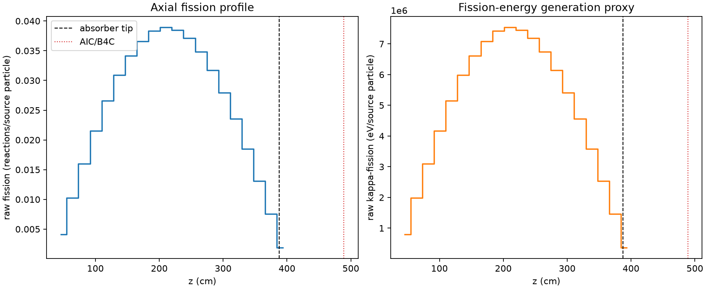
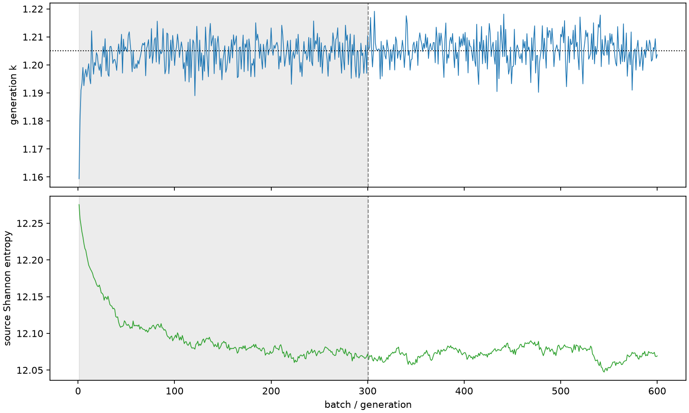

| field | value |
|---|---|
| experiment | V2-STAGE_256_OGRENCI_04-0024 |
| k | 1.2050056492766092 |
| MC standard error | 0.00019199285171799386 |
| seconds | 931.1655055849988 |
| acceptance | not_assessed |
| convergence | review_required |
Completed is output integrity only; physical and statistical review required. Zero tallies do not prove zero production or zero uncertainty.
| diagnostic | value |
|---|---|
| geometric fuel voxels | 5280 |
| zero fission tally voxels | 0 |
| low signal fuel voxels | 0 |
| low signal fission share | 0.0 |
| low signal kappa share | 0.0 |
| important fission share | 0.9500743018195985 |
| previous filter included | 5280 |
| duration estimate s | 1562.5173488400023 |
| actual minus estimate s | -631.3518432550036 |
| fission relative MC error | statistics |
|---|---|
| all_geometric_fuel | {"voxels": 5280, "positive_mean_voxels": 5280, "zero_mean_voxels": 0, "undefined_relative_error_voxels": 0, "median": 0.010848526490731609, "p95": 0.03452046676125557, "maximum": 0.04635422412316205} |
| low_signal | {"voxels": 0, "positive_mean_voxels": 0, "zero_mean_voxels": 0, "undefined_relative_error_voxels": 0, "median": null, "p95": null, "maximum": null} |
| important_95pct | {"voxels": 4208, "positive_mean_voxels": 4208, "zero_mean_voxels": 0, "undefined_relative_error_voxels": 0, "median": 0.010168638217398723, "p95": 0.014983016477648855, "maximum": 0.01846522073517872} |
| outside_previous_filter | {"voxels": 0, "positive_mean_voxels": 0, "zero_mean_voxels": 0, "undefined_relative_error_voxels": 0, "median": null, "p95": null, "maximum": null} |
| kappa_fission relative MC error | statistics |
|---|---|
| all_geometric_fuel | {"voxels": 5280, "positive_mean_voxels": 5280, "zero_mean_voxels": 0, "undefined_relative_error_voxels": 0, "median": 0.010836359419064464, "p95": 0.03447490148210612, "maximum": 0.04630161125730832} |
| low_signal | {"voxels": 0, "positive_mean_voxels": 0, "zero_mean_voxels": 0, "undefined_relative_error_voxels": 0, "median": null, "p95": null, "maximum": null} |
| important_95pct | {"voxels": 4208, "positive_mean_voxels": 4208, "zero_mean_voxels": 0, "undefined_relative_error_voxels": 0, "median": 0.010157599091374897, "p95": 0.01496755856010471, "maximum": 0.018444410953021767} |
| outside_previous_filter | {"voxels": 0, "positive_mean_voxels": 0, "zero_mean_voxels": 0, "undefined_relative_error_voxels": 0, "median": null, "p95": null, "maximum": null} |
| axial bin | fission share | kappa-fission share |
|---|---|---|
| 1 | 0.008302104913456383 | 0.008302528598868146 |
| 2 | 0.020862982319859884 | 0.020863005911693384 |
| 3 | 0.03250866366483164 | 0.03250858564338555 |
| 4 | 0.043785639190280785 | 0.0437855275560683 |
| 5 | 0.05405906039221017 | 0.05405892073064902 |
| 6 | 0.06275131768038437 | 0.06275112379658872 |
| 7 | 0.06932034604548519 | 0.06932017437794889 |
| 8 | 0.07429505324368474 | 0.07429506156227356 |
| 9 | 0.07793389198626464 | 0.07793394553291227 |
| 10 | 0.07905552484228144 | 0.07905543818354191 |
| 11 | 0.07822029715009265 | 0.07821998551090965 |
| 12 | 0.07547594525646373 | 0.07547590324317743 |
| 13 | 0.07080896276679073 | 0.070808923022739 |
| 14 | 0.06446961013487457 | 0.06446953436294085 |
| 15 | 0.05679067975850334 | 0.05679068824513413 |
| 16 | 0.047909234872640115 | 0.047909197541411506 |
| 17 | 0.03757565755874868 | 0.037575549161730164 |
| 18 | 0.02662941100045113 | 0.02662937232637522 |
| 19 | 0.01540462778196752 | 0.015404639713828897 |
| 20 | 0.0038409894407282624 | 0.0038418949778232423 |
Histories include the inactive-to-active transition at batch 300. kappa-fission approximates fission energy production, not total heat deposition.

